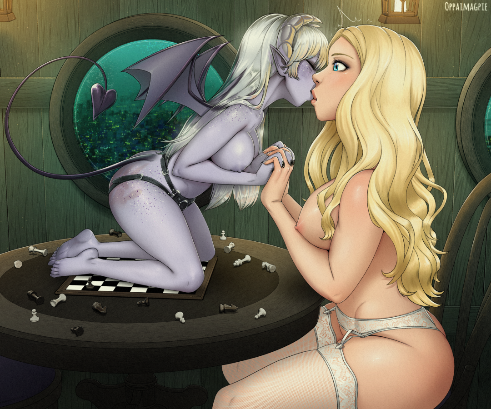

24 - They Saw That They Were Naked
That must be its decision, then. Heartbroken, I seek inside for words to explain what happened.
It--
My clutch spins free.
Game please, I don't feel bouncy-happy right now--oh. Maybe I have to be petulant?
The game speaks to me, in a soundless voice:
Try to be who it's just been showing you. Play pretend, make believe.
I gulp, fight with the tears--no, let them come. The person it showed me just now was guileless, unguarded. I start to weep uncontrollably the instant I slacken my grip against their torrent, and discover the game has put me back in control of my body.
Rada is still gently rubbing Lyra's nectar into my reddened ass cheeks, so I stay put, and try to remember how it felt.
I kept being--I'm not sure how to describe it. Vulnerable isn't right. I squirm a bit.
"I felt like such a dumb little slut when I realized what I was doing when I came...um..."
My voice was higher, softer, it had no idea of trying to be powerful in it. I try this on.
"The game did make slink onto you like that all quickly but that's what I would have done exactly if I'd had the courage, so you saw what I felt more completely than if I'd been in control of myself. I'd asked the game not to give me any agency through your whole spanking and it controlled me down to focusing my senses and feelings and thoughts word-by-word except it could make me actually be myself instead of this...this!...that I can't let go of because I'm scared to be myself I just learned and it's stopped controlling me now so I'm trying my best to be the person it showed me but...Rada you do this a lot, right?"
I haven't meant to say so much, but maybe...maybe I should have. Maybe it's progress that I did.
My words are all swords and shields somehow, even my internal monologue, a storm of metal I can never see myself through--until just now. If I could only--but it's like a camera trying to take a picture of itself. I need a mirror. Maybe Rada can be that for me. Maybe Lyra can if I can figure out what to tell her to do.
"I'm an initiator, so yeah, your definitely not the first I've given their first spanks. Why are you asking?"
"Can you see what's wrong with me? How I can be the person I was while the game controlled me just now?"
"How did you experience the game controlling you differently than it letting you control yourself?"
"Umm...it just felt like I was naked and you could touch me and it can't just be your dominance because you've been riding me with that this whole time--"
Tell her. The game would make me say it.
"--and I love it and--and I'm really into you but it still hasn't broken through like this did."
I find myself at a loss, twist and flail, finally discover my real question shivering in a corner, try to gently draw it out. It will only come if I shield it.
This works the same with humans, right? The sense of her presence is easy enough to know at least.
Would you mind dreamtalking with me?
I don't mind. If you want I have a storage locker I use to stick subs in under the couch, just for things like this, and she'll be right there underneath us and not hear a thing.
I...need to be in the same space with her even if I'm not looking at her. You guessed me, though, it's because I think my real thing is it made me feel how especially with her it's like I'm...armored or something, I can't explain it, and just...I mean you're a dom obviously, isn't that necessary? Shouldn't I enjoy being untouchable? You seem invincible!
I guess I'm dominating you pretty well, then! Yes, many doms like to be inviolate, but believe it or not some are just are barehearted as you were when the game was playing you right now. They're rare on Earth because the status hierarchy usually sends them out of the dungeon frustrated, so you might think it's not how playing top and bottom works but I know it does, because usually it takes about five or six spanks before I'm crying too.
I guess you didn't hear me, yeah?
Wait, what? Why? Did something happen?
You were adorable, and you seemed to be feeling things you couldn't feel until I opened your eyes to them, and it makes me emotional to be able to make someone who barely even knows me have an experience like that. It's powerful, no question, and you definitely seem to be submitting freely now, so I feel accomplished, which is happy, and you seem to feel safe with me and every dom likes that, but...how precious would you say the chance to beat your ass was, having your first spanking ever? Nobody can ever buy it again now. I'll keep the memory and feel happy when I think of it, and so will you, because whatever you take will remind you of selling your first spanking for it. That's a lot of feelings to have while you're also driving the scene that's giving you them, so if you feel them as intensely as I do it probably going to make you cry. I'm very emotional, I just have practiced discipline in staying powerful while it's happening to me. You can be the same way, except you and your seedling are very different than any other playmate you'll ever be with. She can read your thoughts and feelings even without the game telling your secrets. I've been watching her. There's no point trying to hide anything or try to be secretive because apparently your seed-ghost thinks privacy will get in the way of your relationship. I'm very sure she already knows you feel heartbroken right now and even can say something about why. Why don't you ask her to tell you now what she knows of what you experienced?
This is such an obvious--
It didn't feel like that. That feels like dusty aluminum.
Ummm.
What a good idea!
My clutch slips a notch? Oh! I never hesitated the whole time!
Cocksleeve, I know you heard me crying, but what else do you know of what I've just been through? I'm processing it with Rada.
Every speck of understanding this is like a dying ember in a universe at heat-death, to be leapt on preciously.
It's melodramatic, but I am melodramatic. When Rada hit me I sang, had to perform to get the pain and pleasure and sobbing out without it turning leaden and sinking to the bottom of my heart instead because it couldn't fit past my gritted teeth.
I wish she would spank me some more, it felt aws--so good ("so good" is breathier and sexier and feels nicer), I think doggedly knowing full well the game is listening, because it's something that me-er me would have thought.
Goddess I heard you say the game made you be the person you would be if you could just be yourself without being scared, and that you were sad because they game won't make you agency-free right now. Then you started saying you're worried I won't like you if you're naked with me but I will because I do because you already are. I didn't tell you because maybe you didn't want to be and if I pretended to only hear what you say out loud or dreamtalk to me you could believe that was all you showed me and it seemed like you were like you said inviolate so I said this is Mommy's choice and I respect it and that's that I won't let one single idea past that I didn't hear from you telling me out loud or by dreamtalk or some other way than me just seeing it inside you.
My cock pulses inside her, lengthening again after orgasm, as the vulnerability has its paradoxical effect even as the humiliation of all of what this means she's heard tonight washes over me.
No dreamtalk, just thoughts: I want you to tell me you heard this, sneaky snuggly. I'm making sure I understand. Has it been like this as long as you've been my seedling?
Goddess you're thinking how you feel yourself getting hard inside me which I feel tooo Mommy yummm because being naked makes you horny even though you're humiliated because there are thoughts you're ashamed of me knowing. You don't mean to dreamtalk you're just thinking and you want me to tell you if I can hear you anyway and I can and I really didn't mean to be sneaky Goddess I just can't stop so I did the best I can to be respectful. Yes you've always been naked to me as long as I've been your seedling.
Come over here and kneel where my head is. If you can see this all anyway I want you near me.
AND I AM SO GLAD YOU CAN THIS IS SO HOT AND SUCH A RELIEF.
How far does this go? If I intentionally hide something, can you see it? Tell me if so. I try to think this thought, but bury it deeply and shroud it in a wreath of "not for Lyra".
Stand carefully whooh this is heavy inside me eep dripping nectar EVERYWHERE I hope Rada doesn't mind I made such a mess in her nursery now caaaaaarefullyhhaaaaaahstep...hhaahstep...I'm full I can't sway my hips have to...wiggly instead...haaah this is so big eep slip on my nectar blush falling eep OOF! There I'm next to you slave pose hands back present I guess tail-control comes back when I'm done being obedient for other stuff.
Squirm rock hips you're almost ready to start fucking again hell yess so much cum in me maybe you'll feed me so much it expands me!
Yes I can still hear you when you hide things but if you say I shouldn't I still can pretend not to be able to hear you.
No. Never do. Just embrace it. This is something neither of us can control or be responsible for and...I'd never understand how important that is without the game you made me. I'm so pleased with you, Lyra. Good cocksleeve. Well made. This is a bad ass present.
Suddenly my clutch spins freely and I fall limp in Rada's lap, but it's not clear why, especially since the game isn't managing my thoughts or emotions at all right now.
Oh, okay. The helplessness of feeling something that should make me sound like an entire porn convention without the slightest ability to express it returns as the game pushes the explanation for this sudden (though not unwelcome) seizure of control.
I did a great job being me just now. The game is rewarding me! I'm going to be able to list the accomplishments I make like this to people who the game thinks should know them, and see it myself, but my reward is the ability to when I feel like it say to the game I should be held in the position it thinks will be most gratifying to the people around me--including me, by making sure it positions me in a way I will experience as very me. I can't let myself out of being held once I'm into it, but that would be boring if I could.
Do it, game, and make sure I get the rush of wondering just what will happen to me when I use this!
That's something else this new me would think.
My body moves directly, under the game's control, clutch freewheeling, and I thrash and struggle uselessly for the sheer fun of it, grinning internally how nothing this does.
It picks me up, and with a dizzying, terrifying fluid gate that seems to turn my spine to water and my hips to ocean waves (well, okay, with the cadence wading-pool waves but that's better I'm not serious if I could just remember that while I think) bounces me cheerfully over to a table with the grid of the chessboard from which Rada's visual aids came before and plunks me down in the chair to sit me motionless in the position as if shuffling cards, hands as if holding the two halves of the deck far out in front to accentuate my cleavage--and there I stay, a statue, but a pretty one, and I'm amused by the pose.
Wobblypet, shuffle over here so you don't fall with that inside you and get in the opposite chair and pretend like you're shuffling versus me.
Get up shuffle--gah!
Intention preemptively implemented. Enjoy.
Our seed-ghost pounces on the wish just before it coalesces enough for Lyra to see me wish it, giving her the sudden surprise I was making part of the wish.
Haaaah no WAY hot! I'm moving how the game moves you that was your wish!?
MIND CONTROL TOO YES That's all I can--
I'm facing the couch, so I can see my wish take hold of her and move her body for her as mine's been moved for me until she's sitting at the table...then climbing up onto it, and reaching for my hands to take them as she kneels on the table in front of me scattering chess pieces everywhere, and leans forward to join the half of a kiss I mistook for my mouth being open in some exhalation of slutty indignation or pleasure and her lips are against mine and it's wonderful, what the fuck is wrong with me to have let more than fifteen seconds pass without kissing her.

When I use the other ability I've been foolishly ignoring, namely reading her mind, I see her soul happily constrained as I requested to the pleasant simplicity of feeling the emotions and sensations of my cock inside her, our hands intertwining, our lips interlock, and slipping her slick little tongue into my mouth as everything else goes into position.
I'd been imagining shuffling cards together, but that's not what the game had in mind at all, or our seed-ghost, and the kiss is an orgasmically preferable surprise--literally!
Pleasure throbs, the weirdness of my cock not being attached to me but able to pump my ridiculously-sized load into her anyway overwhelms, our seed-ghost is ahead of me on my wish for her to be sure to experience and enjoy all of this with the singleminded vividness the game can and does give me, even the experience of having her own feelings expressed for her on the face she can't otherwise move--just as the game gives me mine, for her open-eyed benefit--
UNFFF YUM that's hot it's so big and filling me UPPPPP
And then Lyra's half-mast eyes go wide with fright inches from my own and the nectar in her mouth floods into mine followed by--ice cream!?
No, something's gone weird with my tastebuds--
The knowledge of what and how slides in an appropriately phallic manner into my mind.
The rewire has worked, oh has it worked, and though the preference for heat over cold for this is shocking, and there's an actually twistedly wonderful incestuous tang to this particular batch for obvious reasons, the route its taken has infused it with the nectar out of the depths of her body, thick and dark and heady with floral candy sex, making something like a berry-syrup-topped sundae which wouldn't usually be my preference but Lyra-candy trumps chocolate any day even if I am a girl now.
It's, fuck it this is amazing good one cocksleeve now relax and let it happen neither of us is moving and I'm trying to cum here...mmmhh...
EEE You're happy I was so scared this would mess up your identity okay then relax...haaah feel so cunty having your cum go all through me...
Well played, game. Having the first load of cum to be nonconsensually put into me put there by myself, via Lyra's overfilled body, while held in this romantic tableaux by the game she created to show me the joy of powerlessness with no idea when I'll get out again, and her held by my wish to turn it back on her but with myself in the game's seat of power, teach me I've been rewired by the game to enjoy it like ice cream (if ice cream could make your eyes water from the pleasure), but have it be Lyracunt syrup sundae twist instead of just vanilla bwaha hard-serve is me, and gratifying to everyone here, yeah.
I'm only sad I can't use my tongue to lick at it and really enjoy the texture (which I should not have been able to be rewired to enjoy, but have been anyway). Next time, I suppose, and it's motivation to try out some other things more insistently, for sure--no more cheating with dildos that don't spurt, for starters. Maybe I'll beg the game to make the load part of my price next time it sells me for a blowjob.
And the helpless way it flows down my motionless throat by the pulsating pressure of my own orgasm to settle hot and thick inside me is a kinky pleasure all its own, masturbatory selfishness transformed (not that there'd be anything wrong with such a thing) by Lyra's inclusion in the circuit to something so much better.
More knowledge insinuates itself like a kind purply tentacle into my head: The game is keeping me hard (by preventing me from willing myself soft) because if my hard-on goes away, Lyra is so full of cum right now it'll spew out all over the table, and there's about eight gallons (!) of it inside her so that's not an inconsiderable mess. The same thing will happen if our kiss separates, which it's my prerogative to order, so this is my warning to consider the consequences of doing that. Keeping me hard means I'll cum again soon, and two more orgasms will fill me to capacity at which point the only place for it to go is the chair under me via my ass. All of these would in the eyes of the game and it's 100% certain Rada as well ruin my outfit entire, allowing Rada to negotiate for services from me. The game is asking Rada for aid...after I cum one more time. The game is constrained to allow me to command Lyra for my pleasure and convenience and to make sure she gets enough of my attention for our relationship to thrive, but none of those parameters is impinged by it being impossible to call Rada before then, so my clutch will slip if I try to make Lyra call for aid, and the game needs no special circumstance to disallow me calling Rada. The game has told Rada we'd like privacy, so she's left the room.
The game takes control of my focus, dreamtalks words to me from which I cannot turn away. While we wait for me to cum again, it's going to use as much time as I give it to describe the games it's playing or planning to play with me. The games will be arousing, so I will be certain to cum and this is how it will be keeping me hard, and I'm welcome to use Lyra for my pleasure as per always, but the longer we stay in this kiss, the more the game will reward me with both information and rewards of the kind it's given me already.
I can use Lyra now.
You heard all that, right, squishy?
Yes Goddess the game is giving you predicament bondage.
Good. I want you to understand why I'm making you into a statue entirely.
Seed-ghost, do it.
[command accepted]
Haah...stuck...
It is an epic predicament, with my mouth full (full, and under gentle pressure) of my own (orgasmically delicious) cum, Lyra literally overflowing and impaled, and our hands holding and lips locked. She's so pleasantly, softly, wonderfully close...
This set up, the game takes over again. More dreamtalked words--it'd be cheating for the game to use its orgasmic semiliteral mind-fucking right now--pour in:
The game will now begin explaining several new types of system you will have access to under its command.
The first is the goals list you encountered earlier. At any time these may be viewed by intending the game to display them. Try it now.
My mind is given back to me with the single option to intend to see the goals list. I do it, and the list floats in front of my face, black text hovering free making a table of priority, goal, rewards.
Can you see this too, snuggly?
Yes except it's not where I can read it, Mommy.
How naked am I? Can you see through my eyes?
Yes Goddess everything you think and feel I see so I can always be helpful without your explaining what's happening.
This line of inquiry is definitely not helping me keep from cumming again too soon, but I need to know.
Does that mean you can feel me inside you right now, from my perspective!?